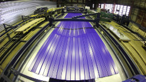
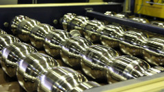

Доставка

Доставка уже обработанного, нарезанного металла выгодна по многим параметрам:
- Сокращение затрат на транспортировку металла;
- Сокращение площадей под складирование металла;
- Отсутствие дополнительных расходов на содержание и обслуживание металлообрабатывающей техники;
- Возможность использования квалифицированных работников.
Отдел продаж
Оформить заявку и получить информацию о наличии, стоимости металлопроката и услуг, условиях поставки, и пр. можно у специалистов отдела продаж по телефонам
+7 (3452) 520-670 (71, 72, 73, 74)
Кровля и фасад
В 2010 году на территории второго производственно-складского комплекса компании «Тримет» введены в эксплуатацию первые линии для производства профнастила. В 2013 г. производительность участка кровельных и стеновых материалов составила 250 тонн/месяц.
На производственном участке установлено оборудование, позволяющее производить широкий ассортимент продукции и оказывать производственные услуги по обработке металла:
Производственные линии:
- Профнастил С-8; С-10; С, НС, Н – 20; НС – 35
- Металлочерепица Супермонтерей
- Металлосайдинг Корабельная доска
Листогиб SCHECHTL
- Гнутые элементы (доборные элементы)
Линия продольно-поперечной резки
- Переработка рулонов листового металлопроката в штрипс и гладкий лист.
Специалисты компании помогут Вам рассчитать количество необходимых материалов, а также подобрать к Вашему объекту отделочные элементы и элементы безопасности кровли и фасада.
Компания «Тримет» с 2012 г. является официальным дилером Grand Line (водосточные системы).
Продукция ООО «Тримет» сертифицирована.

 